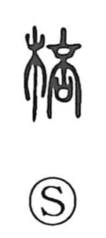

棒

Uncategorized
Kun: | On: bo
stick ・ rod ・ club
Explanation
A phono-semantic character: 木 marks the material, wood, and 奉 supplies the sound while recalling its original form—both hands lifting up a branching twig (丰), with an additional supporting hand from below. From this image arises the meaning of a thick wooden stick or club. The Shuowen records 棓 as the earlier, proper form for a whip or rod, with 棒 coming into common use from the Wei and Jin periods. The sense is preserved in modern usage such as Chinese 棒球 (baseball) and the idiom 針小棒大, to turn something as small as a needle into something as large as a club, i.e., to exaggerate.